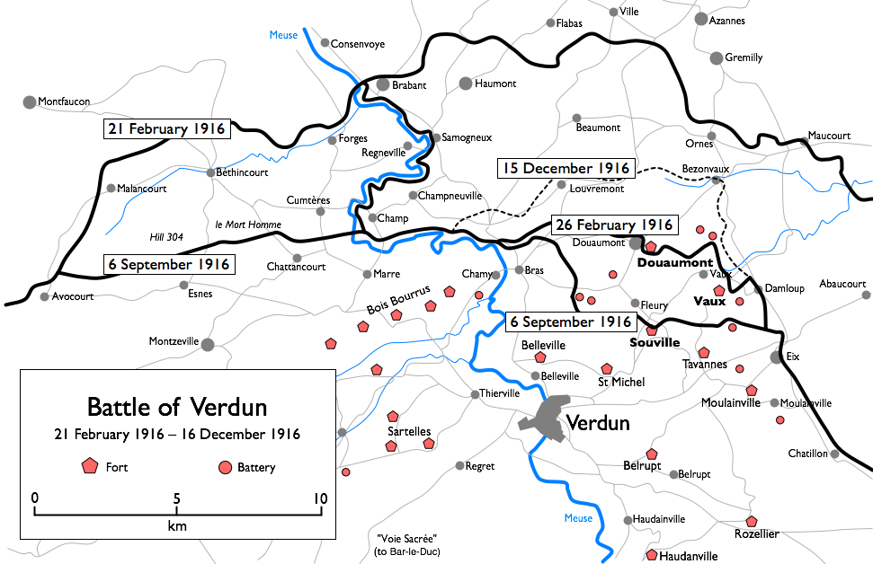

Les grandes batailles d'usure
Les batailles sur le front de l'Ouest n'étaient pas des événements au sens traditionnel, mais souvent des batailles de matériel qui duraient des mois, au cours desquelles les gains territoriaux stratégiques restaient minimes. Ces offensives reposaient souvent sur une « stratégie d'attrition » – l'objectif n'était pas la percée, mais la destruction systématique des réserves ennemies.

Bataille de Verdun (1916)
Le général Erich von Falkenhayn poursuivait l'objectif de « saigner à blanc » l'armée française à Verdun. La forteresse de Verdun devait être menacée par des attaques d'artillerie massives si fortes que la France serait obligée d'y envoyer chaque soldat disponible.
L'examen critique de cette stratégie révèle une erreur de calcul : l'armée allemande a elle aussi saigné autant que l'armée française. Le résultat a été une bataille de près d'un an avec des changements territoriaux minimes, devenue l'incarnation de l'absurdité de la guerre industrielle.
Bataille de la Somme (1916)
L'offensive franco-britannique sur la Somme visait à soulager le front allemand. Elle est surtout connue pour sa première journée catastrophique, au cours de laquelle la British Army a enregistré plus de 57 000 pertes – résultat d'une tactique d'infanterie obsolète face à des positions de mitrailleuses modernes.
Les batailles des Flandres (Ypres)
Dans les environs d'Ypres, de nouvelles technologies cruelles comme le gaz toxique (utilisé massivement pour la première fois en 1915) ont été testées. C'est ici que s'est manifestée l'impuissance de la stratégie face aux conditions chimiques et géographiques (paysage marécageux).
Testez vos connaissances !
1. Quel objectif Falkenhayn poursuivait-il avec la stratégie de Verdun ?